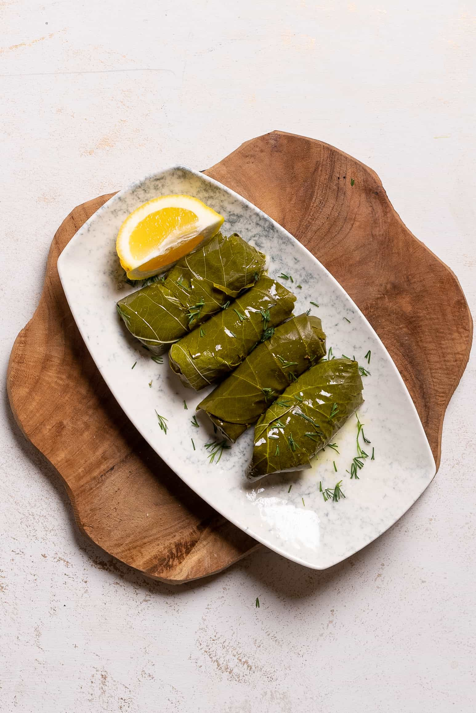

Dolmades
At vero eos et accusamus et iusto odio dignissimos ducimus qui blanditiis praesentium voluptatum deleniti atque corrupti quos dolores et quas molestias excepturi sint occaecati cupiditate non provident, similique sunt in culpa qui officia deserunt mollitia animi, id est laborum et dolorum fuga. Et harum quidem rerum facilis est et expedita distinctio. Nam libero tempore, cum soluta nobis est eligendi optio cumque nihil impedit quo minus id quod maxime placeat facere possimus, omnis voluptas assumenda est, omnis dolor repellendus. Temporibus autem quibusdam et aut officiis debitis.
Ingredients
- Vine leaves: I used 60 in the recipe to make a plate full of Dolmades but use however many you want for the size of the dish you are creating.
- Filling: Rice is mixed with onions, lemon juice, salt and pepper and herbs to stuff into the leaves.
- Seasoning: Once the leaves are rolled, you will need some lemon juice and salt and pepper to drizzle over them while cooking.
Preparation Steps
- Preparing the leaves
- Preparing the filling for the leaves
- Stuffing the leaves
- Finishing the dish